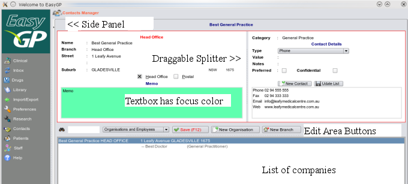

Interface Design
Most of the graphics user interface components (GUI) in virtually all sections, look the same and function the same way
irregardless of the content of their information or purpose and it cannot be emphasized enough that
by learning the concept of using one screen you can apply that to all the others as they will function the same way.

- Side Panels - here the almost hidden vertical strip down the left hand side, next to the side bar, when clicked will expand to
reveal their hidden content, for example this could be a help screen, or a graph. They can be vertical as here, or horizontal as in the
main clinical screen in the progress notes section. Click these to check out what lies underneath
- Splitters - These vertical or horizontal serrated lines can be grabbed and moved, and in doing so you will stretch and resize the
contents, be it textboxes or lists. Adjust these to make the interface as you would like it and use in conjunction with the Application Font.
- The Edit Area - here enclosed by a red outline indicating data has changed is the most central concept in EasyGP
and will be discussed ad-nauseum in a later section. Here, new information is entered, or existing information is changed.
- Edit Area Buttons - usually Save, New, Preview, Print or variations of this will save any changes of data in the Editing area.
- Data Lists - usually live under the editing area and contain lists of information - e.g names, here of companies, but in other places
the list will be of patients, medical conditions, vaccinations etc.
- PopupMenu's - abound everywhere, usually over lists, but can be over panels and let you action items on the list, e.g delete, print, or let you
adjust things like font and colour of the list or panel.
- Color Changes - are used extensively to indicate either, as here, a textbox has focus, or as here, data has changed - here the entire editing area which
has become outlined in red as data changes.
Note that any adjustments you make to a screen will be automatically saved when the program exits. If it does not then there is a bug
in that section and you should notify us immediately.